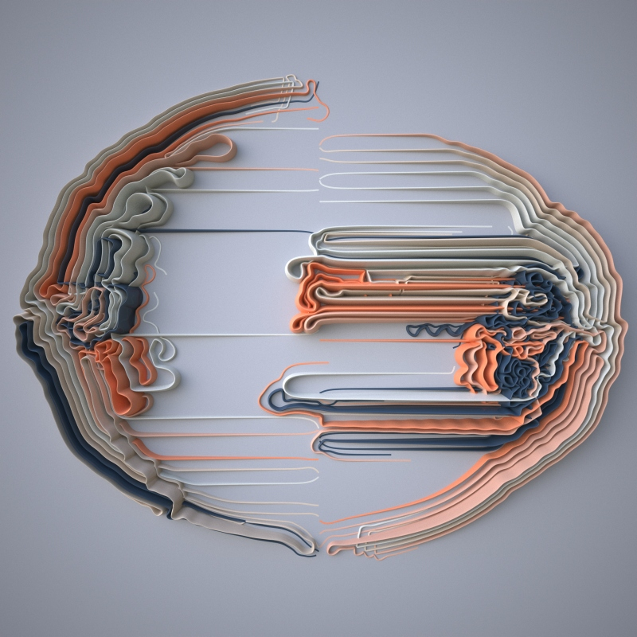
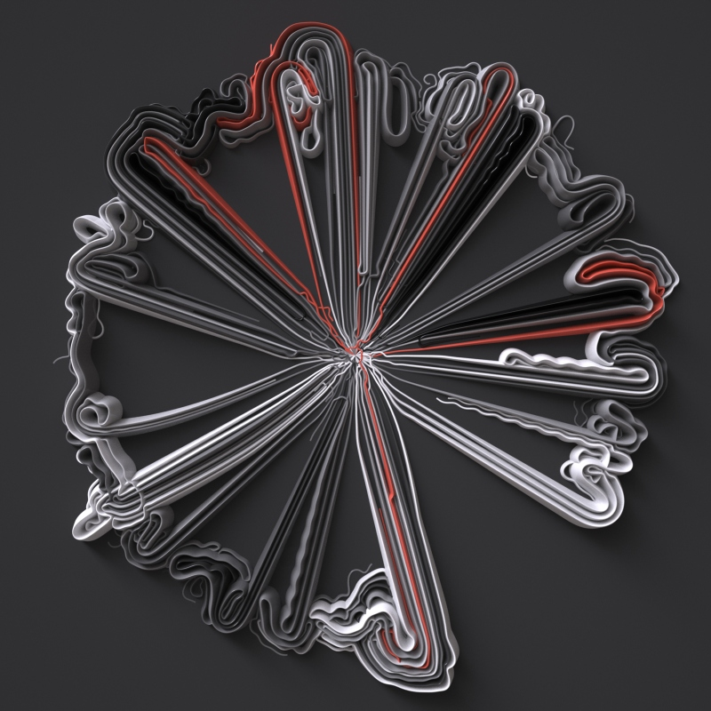
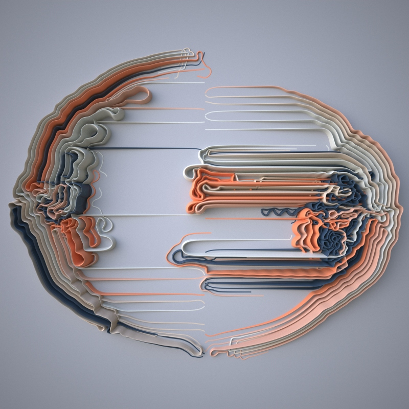
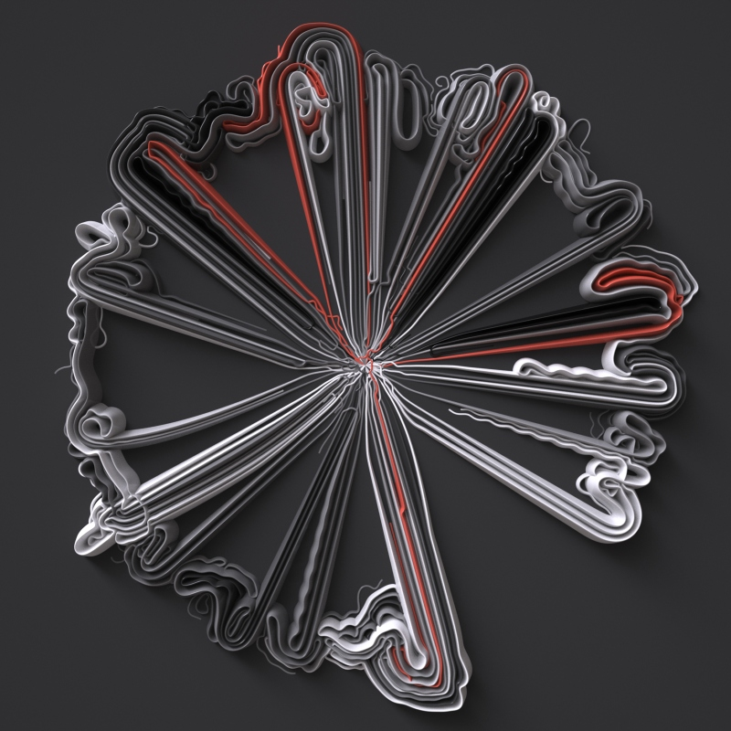

Meanders
Using Processing Italian artist Giuseppe Randazzo created Meanders as “a generative system driven by the interaction of growing agents”.


Using Processing Italian artist Giuseppe Randazzo created Meanders as “a generative system driven by the interaction of growing agents”.